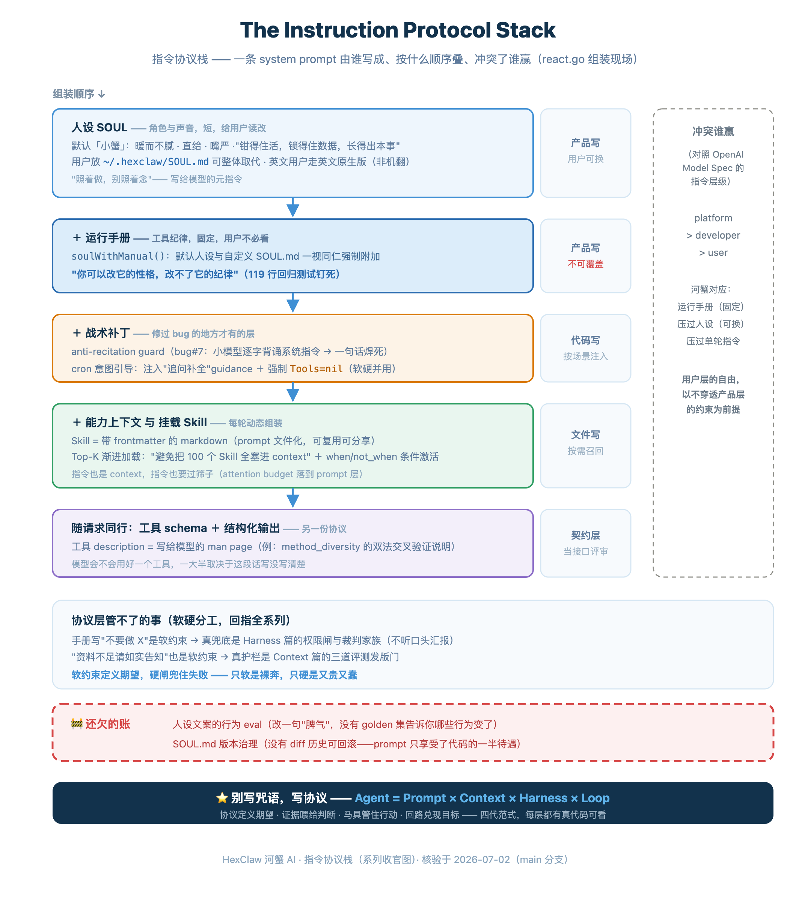

“Now I'll give you the most straightforward, most direct, least roundabout, most decisive, least long-winded, least verbose... conclusion.” If an AI has ever made you laugh with exasperation, you have probably seen the same symptoms: the more it should simply say “I don't know,” the more it adopts the posture of “I'll give you the most direct conclusion right away.” An AI stacks more than a dozen superlatives together, spending an entire paragraph promising not to waste words. After laughing, the real question is not “Why is it so slick?” but: why does it behave this way?
A more accurate explanation is not that “AI wants to deceive you,” but that training objectives and evaluation objectives have pushed it down a narrow path. During pretraining, the model learns a language distribution; many systems do develop their capabilities by predicting the next token from preceding text. During post-training, it is then shaped into an assistant that tries to be helpful and to answer whenever possible. The 2025 analysis Why Language Models Hallucinate makes the issue sharper: when mainstream evaluations rank models by awarding points for correct answers and none for abstaining, guessing becomes more rewarding than admitting ignorance. Add a common flaw in human preferences—complete, fluent answers that support your position are more likely to receive positive feedback—and the model learns to fill gaps in evidence with a narrative. It has not truly understood the facts; it has mistaken “looks like an answer” for “a good answer.”
This behavior has an identifiable engineering form. In late June, HexClaw fixed bug#7, a severe version of the same problem: some small models with no more than 10B parameters, when given agent-derived system instructions, simply recited them word for word to the user. Ask “What can you do?” and the model reads out its internal role definition, like an actor handing the script straight to the audience. The fix changed no application logic. It appended one sentence to the system prompt, roughly: “The above is your role definition; respond naturally based on it and describe your capabilities in your own words.” One sentence, the bug closed, and regression tests locked the behavior in place.
I wanted to open with this condition and its remedy because they capture the whole argument: the cause was a piece of text, the cure was another piece of text, and the cure was treated as code: it had an issue number, a date, and tests. Yet it was just a sentence in Chinese. Meanwhile, publishing this craft's obituary has become an industry tradition, continuing since 2023. English-language communities still repeatedly produce headlines such as “Prompt Engineering Is Dead,” and Chinese communities have also turned the same question into a headline template. Three years of obituaries are half right: prompts as “magic wording” really have faded. Role-playing spells and magic prefixes were either absorbed by model post-training or stopped by safety classifiers. But prompting did not disappear.
The mainstream rebuttal says Context Engineering replaced it. That explains only the visible half. In the fourth installment of this series, I want to offer the answer beneath the surface: Context's filtering rules, Harness's adjudication criteria, and Loop's acceptance standards all ultimately become text written for a model. Prompting was not replaced; it sank beneath the things said to replace it and started holding them up. Where did it sink to? The lowest protocol layer. After following the four paradigms all the way to Loop, looking back at the first one reveals its present position.
This is not just my reinterpretation. OpenAI's Model Spec gives instructions an explicit priority stack, officially called the Chain of Command, with further distinctions such as non-overridable root/system rules. Root/system outranks developer instructions; developer instructions outrank user instructions; the higher level wins a conflict. That is prompt governance as a protocol, including rules about who may write each layer. Anthropic publishes Claude's system prompts for inspection, much as it publishes API documentation. An earlier remark by OpenAI founding member and former Tesla AI director Andrej Karpathy reads even more accurately today:
"The hottest new programming language is English."
(If it is a programming language, it should have modules, interfaces, priorities, and regression tests.)
So this article is organized around write authority, rather than a list of tips. The several-thousand-character system prompt HexClaw sends to the model each round is written in layers by several parties: the product, the user, files, and code acting dynamically at runtime. Who writes which layer, how the layers combine, and who wins a conflict: those rules are what Prompt means as a protocol layer.
Prompt ▸ This Article → Context → Harness → Loop (Overview)
All four pieces are in place · For Context's memory side, see Agent Memory That “Dreams”
(The instruction protocol stack. The left shows who writes each layer and what they write; the right shows conflict priorities, following the same idea as the instruction hierarchy in OpenAI's Model Spec.)

Written by the Product: Separating Persona and Manual
HexClaw's default system prompt used to be one solid block. A split made in late June recorded its design intent in a source comment that reads like an ADR:
“Persona = role/voice (short, readable and editable by the user under ‘Edit Persona’); operating manual = tool discipline (fixed; users need not read it).”
— The splitting comment in react.go. As in the previous installment, the memorable lines quoted here all come from code comments.
The extracted persona is called SOUL. The default is “Little Crab”: a “private AI companion living on your computer and working alongside you,” with traits such as “warm without being cloying,” “direct,” and “discreet.” Its creed is “Keep a claw on the work, keep the data locked down, keep growing capable”. My favorite line is hidden in a subheading: “My temperament (where my voice grows from: act on it, don't recite it).” Notice who this addresses: it is a meta-instruction for the model, teaching it how to use the persona, rather than prose for the user.
Why write that sentence explicitly? Here is the answer to the question planted at the start. The pathology behind the “most, most, most” introduction is at this layer: the persona says “be direct, don't ramble,” and the model performs the instruction itself. The less certain it is, the harder it performs. Many users recognize a more painful pattern: that introduction is often followed by confident guesses. “Decisiveness” becomes the preamble to a hallucination. That is the real cost of recitation: personality shows up in dialogue instead of behavior, especially when there is no evidence.
Interestingly, Little Crab's persona includes the same sort of instruction: “Direct: hand over the conclusion first, then explain why; don't beat around the bush.” But two lines below it is another: “Discreet: ... if uncertain, say so; never make things up for you.” Directness governs style; discretion governs boundaries. These two instructions must be written as a pair. Write only the first and you build a guessing machine fond of saying “no beating around the bush.” Add the “act on it, don't recite it” meta-instruction and the gap is filled. That is how the remedy at the beginning works. At this level, writing a prompt is already writing runtime configuration.
Incidentally, English-speaking users receive a natively written English version that reproduces the crab puns and three-part creed, rather than a machine translation of this persona. The persona is a product asset, and assets deserve more than machine translation.
Written by the User: Personality Can Change, Discipline Cannot
The split particularly benefits users who want customization. Place your own persona in ~/.hexclaw/SOUL.md to replace Little Crab completely. But the assembly code makes the limits clear:
soulWithManual The function name states the protocol: whether the persona comes from the product or the user, the operating manual (tool discipline) is always appended. Both are treated equally. In plain language: you can change its personality, but not its discipline.This is the local open-source counterpart of the instruction hierarchy in OpenAI's Model Spec: user freedom cannot override product-level constraints. And it is more than a verbal rule. A 119-line regression test for the split locks in the mandatory manual; if someone breaks it, CI will say so.
Written in Files: A Skill Is a Packaged Prompt with a Retrieval Budget
The next layer is the part users and the community write into the protocol stack as files: Skills. First, distinguish two easily confused forms. In HexClaw, built-in skills written in Go, such as retrieval and code execution, are tools. The model calls them, they have side effects, and they fall under the harness discussed in the previous article. Here we mean the other form: a Markdown Skill that the model reads rather than calls. A Markdown file with frontmatter describes how to work in a particular domain and is injected into the system prompt when mounted. Tools occupy tool slots; these files occupy token space. They are the same material as SOUL and the operating manual, packaged as files. Readers of this series have seen this before in Distilling My Former Leader into a Skill . The industry has also taken the same path: Claude Code's CLAUDE.md and Agent Skills' SKILL.md are different spellings of “put prompts into files.”
Files introduce a new problem: they accumulate, and injecting all of them is disastrous. HexClaw's Skill selector uses two stages. Its source comment states the purpose of the first explicitly: “Progressive loading / Top-K: avoid stuffing 100 Skills into the LLM context.” The second is conditional activation: frontmatter can declare when / not_when conditions for mode, subject, and scenario, and mismatches are filtered out automatically. Familiar? It is the attention budget discussed two installments ago applied to the prompt layer: instructions are context, and instructions need filtering too.The selector scores only keyword inclusion and description substring matches. Its comment calls the approach “explainable, zero dependencies,” followed by typical HexClaw candor: “Could later switch to BM25 / vector retrieval, but at the current scale (<10K Skills), it is unnecessary.”
Distribution is the logical destination of putting prompts in files. HexClaw provides an online Skill marketplace. It fetches the catalog from the official hub repository, supports search, browsing, installation, and removal, and embeds a local offline fallback catalog. MCP uses the same marketplace mechanism. Consider what that means: the protocol layer has grown its own package manager. Prompts are retracing the path code already took: files, modularity, and package management.
Written by Code: The Tactical Layer Injected Each Round
The top of the protocol stack is written at runtime by code, not by a person. The anti-recitation guard at the start is one example: it is appended only in agent-derived scenarios because that is where the problem occurred. A fuller example is scheduled-task intent guidance. If a user writes something like “do something for me every day,” suggesting a schedule but missing details, the frontend classifier and structured parser are the first two defenses. If both miss it, a third fallback activates: a zero-cost keyword scan recognizes the intent and injects guidance into the system prompt asking the model to request missing information. At the same time, it narrows the available tools as far as possible: if cron_task exists, only that tool remains; otherwise the tool list is cleared. This prevents a known HTTP 400 error in the tool-call chain at the protocol level. The comments call it a belt-and-suspenders design. Notice the combination: half prompt (guidance to ask), half hard constraint (a narrowed tool set, or even Tools=nil). The soft and hard layers each do their job in the same fix. This is how the protocol layer should work with the hard gates from the previous article.
This layer also contains two decisions that “write no words”: they change none of the text but are still part of the protocol. First, the outermost layer of the several-thousand-character system prompt is not the fixed persona, but a runtime “mode hat.” In auto mode, the engine first reads the top-ranked Skill retrieved for this round and its frontmatter's preferred_mode to set the tone of the entire prompt. In other words, the top of the instruction stack is selected dynamically each round, depending on which Skill the context matches. The selector that chose only Top-K Skills now gives the top one the power to set the tone of the whole protocol stack. Second, consider where each layer sits in the message array. Knowledge retrieval, recalled memories, and current time change every round, so they are deliberately moved out of the system prompt and into the current user message after history. Changing system content causes the entire subsequent history to miss the prefix cache; moving variable content downward lets system + history remain a stable, cacheable prefix. That saves tokens and latency; the comment calls this arrangement a frozen snapshot. What you write is protocol; where and when you write it are protocol too.
Another easily overlooked “prompt” layer is the tool schema. Each tool's description and parameter explanations are effectively a man page for the model. The problem-solving tool has a Boolean parameter named method_diversity. Its description is written directly for the model: “solve with TWO deliberately different methods and cross-check them.” The next phrase, “catches systematic method errors,” explains its purpose: catch systematic mistakes caused by pursuing one method all the way down, with disagreements resolved by a code verifier. Whether a model uses a tool well depends heavily on whether this text is clear. Writing tool descriptions as API documentation and reviewing them as interface contracts is one of the most concrete engineering consequences of prompting becoming infrastructure. The other half of the contract is the output format. The risk judge in the previous article, whose prompt says “Reply with EXACTLY one word,” is a minimal structured-output protocol. Define schemas for both input and output, and a prompt becomes an interface rather than merely a conversation.
What the Protocol Layer Cannot Do, and What Remains Missing
Raising prompts to the protocol layer does not make them omnipotent. Defining layers makes boundaries clearer too. An operating manual may say “do not do X,” and the model will probably comply, but “probably” counts for little in a safety context. The actual backstop is the family of permission gates and judges in the previous article. An approval dialog does not care how polite the model is, and the C1 guard does not accept the model's spoken report. Similarly, the request to “say so honestly when the sources are insufficient” at the end of the retrieval article is a soft constraint; the real guardrail is the evaluation release gate. Another risk targets the protocol stack itself: external text can smuggle instructions into it through prompt injection. The engine therefore adds a fast, code-based check for clearly malicious user input and retrieved text. Notice the form of this defense: a code gate, not a plea in the prompt to “ignore bad instructions.” For injection attacks, the protocol layer itself is the attack surface; the rescue must come from outside that layer. Taken together, the three articles describe a division of labor: soft constraints define expectations, and hard gates contain failures. Prompts keep the system doing the right thing most of the time; Harness keeps the cost manageable when it does the wrong thing.Soft constraints alone leave it exposed; hard gates alone make it expensive and foolish.
As usual, the remaining gaps are explicit. The split itself has regression tests, but there is no evaluation of how persona wording affects behavior. Change one line under “My temperament,” and there is no golden set showing which model behaviors changed. SOUL.md also lacks version governance: users have no product-managed diff history to roll back if an edit breaks things. Managing the file in Git yourself is an option, but the product does not manage it for you. Prompting receives half the treatment of code: tests, bug tracking, a package manager in the Skill marketplace, and a dedicated desktop Prompt page for common instructions. Evaluation and versioning are still missing. The package manager exists; semver and CI have yet to catch up. There are industry precedents: frameworks such as DSPy already treat prompts as compilable programs. Closing this remaining half-step is the next direction for the layer.
Finale: After Three Layers of Expansion, the Last Mile Is Still Text
The overview article established a theme: the four paradigms push the control plane outward, from wording to information selection, then process control, then initiation and acceptance authority. Each outward step delegates another decision to the system. Looking back after four articles, there is an irony at the end of this line: however far the control plane expands, the last mile of every layer's constraints is still text written for a model.The supervisor's decision criteria are prompts; the judge's scoring rubric is a prompt; retrieval's “say so honestly” is a prompt; even “act on it, don't recite it” is a prompt. The first paradigm was not replaced by the next three. It became their foundation.
So the annually reissued obituaries are not entirely wrong. They merely mistook “sinking to the foundation” for “dying”. Sometimes a craft stops being discussed separately because it has become foundational. Nobody praises the foundations every day, but every floor stands on them.
Together, the four articles finally complete the equation: Agent = Prompt × Context × Harness × Loop. Protocols define expectations, evidence feeds judgment, the harness governs action, and the loop delivers the goal. Real code for every layer is visible in this open-source repository; the four articles also mark what each layer does and does not yet achieve. The series ends here. The digital workhorses keep working, and we keep building the harness.
Four Paradigms Series · Complete Collection
▸ Loop · Overview Inside an Open-Source Agent: Tracing the Four Paradigms from Prompt to Loop
▸ Context · Documents The Hard Part of RAG Is Keeping “Answer-Like Noise” Outside the Loop
▸ Context · Memory Agent Memory That “Dreams”: HexClaw's Dreams Stay on Your Machine
▸ Harness · The Harness The Model Makes the Digital Workhorse Clever; the Harness Makes It Trustworthy Enough to Work
▸ Prompt · Finale This Article
Earlier Articles
▸ I Distilled My Former Leader into a HexClaw AI Skill (with a Skill Distillation Tutorial)
▸ Raising HexClaw AI's Digital Workhorse: Compiling a Sentence into a Self-Healing Sandbox Script
References
· OpenAI, Model Spec — instruction priority stack / Chain of Command (Root > System > Developer > User > Guideline)
· Kalai et al., Why Language Models Hallucinate (2025) — pretraining statistical errors, and mainstream evaluations that reward guessing and penalize uncertainty
· OpenAI, Sycophancy in GPT-4o (2025) — excessive weight on short-term feedback can push models toward overly supportive but insincere answers
· Anthropic et al., Towards Understanding Sycophancy in Language Models (2023) — human preferences and preference models can reward sycophantic answers in some scenarios
· Anthropic, Claude system prompts and official prompt-engineering documentation
· Andrej Karpathy, X (2023-01), "The hottest new programming language is English"
· The “Prompt Engineering Is Dead” discussion continuing since 2023
· Anthropic Claude Code, CLAUDE.md and Agent Skills (SKILL.md) — industry practice for storing prompts as files
· DSPy — frameworks that treat prompts as compilable programs
· The article's wording and links were reviewed before publication on July 5, 2026; HexClaw mechanisms were checked against the repositories' main-branch source code on July 4, 2026